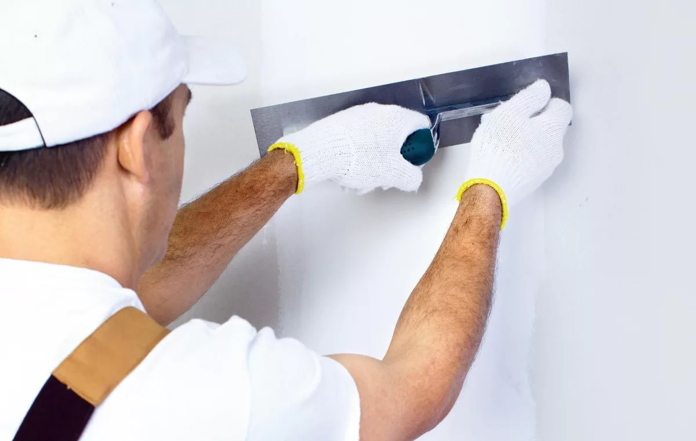

Бесплатная помощь специалиста в подборе декоративной штукатурки
На сегодняшний день одной из самых популярных покрытий в отделке стен является декоративная штукатурка. У нее масса преимуществ, которые зависят от вида, основы и способа нанесения. Как же можно разобраться в этом без участия специалиста, который максимально полно владеет информацией обо всех типах декоративной штукатурки? Ведь он знает приемы правильного ее использования, как при нанесении, так и при создании интерьерной композиции.
Только мастер по подбору штукатурки может помочь сделать правильный выбор и избежать ошибок. Незнание особенностей отдельных ее марок, как в работе, так и дальнейшей эксплуатации могут, обернуться убытками и потерей времени. Что же из этого следует? Вывод очевиден: вовремя полученная консультация – это сэкономленные деньги, время и нервы.

Особенности
Вся предлагаемая декоративная штукатурка современным рынком отделочных материалов, условно делится:
- На гладкие покрытия. Это наиболее популярный вид внутренней отделки стен. Имитация эффекта шелка или перламутрового песка.
- На фактурные. Технология нанесения и состав материала позволяют достигнуть эффекта каменной кладки, эффекта травертино, необработанного камня, дерева. Этот вид штукатурки хорошо скрывает дефекты стен, что позволяет сэкономить на их подготовке.
- На венецианскую. Благодаря этому варианту можно создать поверхность, напоминающую натуральный мрамор.
- На мраморные. Ее используют, как для фасадных работ, так и для отделки внутренних интерьеров. Отличается высокой механической прочностью.
Оптимально можно подобрать штукатурку по типу связующей основы. Именно этот фактор будет определять экологическую безопасность и долговечность настенного покрытия. Связующий материал определяет способность штукатурки получать рельефность фактуры покрытия.
Декоративную штукатурку можно подразделить:
- на известковую. Известковая смесь составляет ее основу. Это самая выгодная, экологически безопасная, влаго- и пожароустойчивая штукатурка. Не подвержена грибку. Однако следует учитывать, что эта разновидность плохо переносит вибраций.
- на акриловую. Очень пластичная смесь. Лучше всего подходит для создания декоративных фрагментов в интерьере. Хорошо переносит вибрации, но боится прямых солнечных лучей. Не подвержена разрушению при передах температур окружающей среды.
- на силиконовую. Эта штукатурка имеет самые высокие эксплуатационные характеристики. Покрытия считаются высоко-паро-проницаемыми, что важно при нанесении на фасады с мягким утеплителем. В частности, она не теряет прочность при повышенной влажности, при ударных нагрузках, при пониженных температурах, а также сохраняет свои свойства даже при прямом солнечном освещении. Легко очищаемое покрытие.
Правильно подобрать штукатурку в нижнем Новгороде с учетом:
- способности к декорированию конкретного интерьера без ущерба качеству настенного покрытия;
- долговечности;
- экономичности;
- пожарной и экологической безопасности,поможет только специалист. Актуальность бесплатной консультации по этому важному вопросу огромна. Благодаря консультированию, вы узнаете
- Особенности свойств различных видов смесей декоративной штукатурки.
- Возможности создания различных фактур, той или иной маркой смеси.
- Об эксплуатационных характеристиках и возможности последующей реставрации.
- О трудоемкости создания покрытия.
- Об экономичности.
Следует иметь в виду, что вызов мастера по подбору штукатурки можно заказать с выездом на объект. Он поможет определиться:
- с оптимальным видом покрытия для внутренних и фасадных работ с учётом подготовки стен;
- назовет ориентировочную стоимость по расходу на декоративную штукатурку выбранного вами вида;
- сориентирует по трудозатратам.